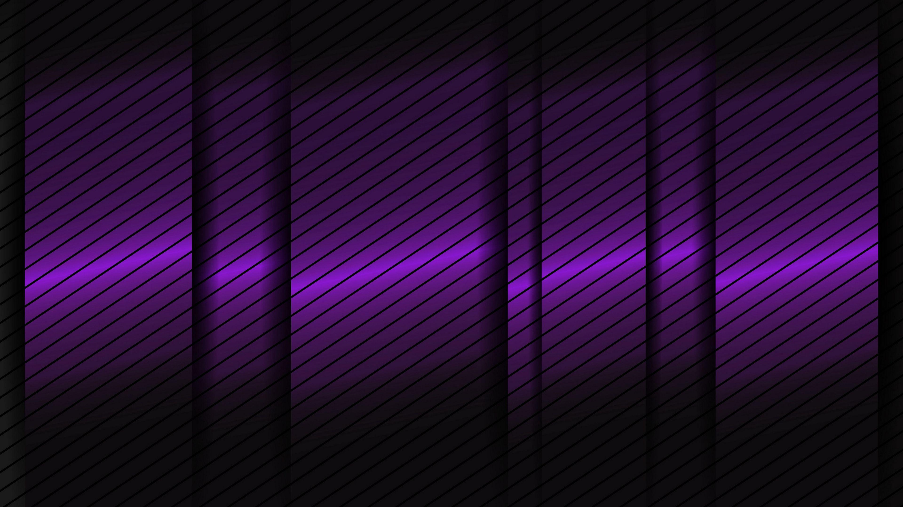

Home
Welcome to our TechPro learning page.
Lessons
We practice HTML and CSS in Visual Studio Code.
Projects
We create simple webpages and design activities.
About
This page is a CSS navigation practice activity.

Practicing CSS Navigation Bars
Starter template structure established with standard header and main sections.
A navigation bar is a list of links that helps visitors move between pages or sections.
A vertical navigation bar stacks links one below another, often along the side of a page.
A horizontal navigation bar places links next to each other, commonly near the top of a webpage. (display: flex).
The :hover pseudo-class styles a link while the pointer is over it. and handled :last-child.
Task: Make sure the active link is easy to identify. Test every link and confirm that it jumps to the matching section.
- ✓ Status: Part E Tested — Dividers, hover effects, and section jumps confirmed working.
Welcome to our TechPro learning page.
We practice HTML and CSS in Visual Studio Code.
We create simple webpages and design activities.
This page is a CSS navigation practice activity.
Build a one-page “TechPro Learning Portal” that includes all requirements below:
href="#id") fully functional.Designed a custom ICT Club theme with dual top horizontal and side vertical navigation systems.
Explanation (Vertical vs Horizontal Menu):
A vertical menu is ideal when dealing with numerous nested navigation options, sidebars, or dashboards where vertical screen real estate is abundant, as it keeps long lists structured and easy to scan vertically.